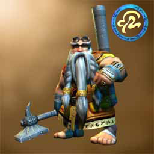

Forums galactiques > Marché galactique : discussions commerciales > 2 million gratuit
Pages : 1 2
| Cronos Renommée de marchand : -31  27/02 ETU 13:00 | Score : 0 Détails Je donne 2 million à tout ceux me pretant une planete dans les systeme du commandant erhin.
Me contacter par mp. | ||
| Orathis Renommée de marchand : 56 27/02 ETU 13:02 | Score : 0 Détails même moi?
| ||
| Cronos Renommée de marchand : -31 27/02 ETU 13:55 | Score : 0 Détails Vous je vous ai bientot finis , je n'en ai pas besoin.
Voila se que sa rime à ne pas rendre les planètes. | ||
| Wolverine Renommée de marchand : 2271  27/02 ETU 14:40 | Score : 0 Détails 2 000 000 de leems ? ....
Nan, pas assez ... Désolé ! | ||
| dechiketeur Renommée de marchand : 111  27/02 ETU 14:42 | Score : 0 Détails Attention Cronos, il pourrait t'arrivé des bricoles...
| ||
| Lieutenant Filot Renommée de marchand : 4 27/02 ETU 15:46 | Score : 0 Détails comme quoi?
| ||
| Capitaine Bloten Renommée de marchand : 70  27/02 ETU 16:18 | Score : 0 Détails comme une alliance de plein de commandants sur le dos
| ||
| Erhin Renommée de marchand : 101 27/02 ETU 16:50 | Score : 0 Détails 2Mo ? c'est tout?, je pense que ce n'est pas asser, il y a beaucoup de risques .. allons mon cher cronos.. ou etad, ou je sais plus qui , enfin bon, mon cher "ennemi", vous devriez être moin radin, aprés tout avec vos triples personalitées je pense que vous pouvez vous le permettre.
Aussi se rabaisser a ce genre de chose pour pouvoir me vaincre, .. serais parce que je vous ai "viré" de tous les systémes ou nous étions ensemble ? personnellement tous les commandants qui vont accepté une telle offre, je ne leur en voudrais pas, aprés tout, ils veulent gagner de l'argent.. bien sur ils s'exposent a certains risques. et je n'ai généralement aucune pitié pour de tels actes ^^.. | ||
| Erhin Renommée de marchand : 101 27/02 ETU 17:18 | Score : 0 Détails Cher commandant Orathis, je vous donne 1 leems en échange du pret de planétes qui serai proches de celles de ce cher cronos.. c'est un bon prix ^^ apres tout, en temps de guerre il faut savoir s'entraider n'est ce pas ^^?
| ||
| Eriol Renommée de marchand : 190  27/02 ETU 17:35 | Score : 0 Détails Il est dangereux de s'enprendre a Orathis.
Pour le simple fait qu'elle a dés planétes a moi en garde. Courez vite Cronos, le temps joue contre vous *Le commandant s'éloigna en mumurant pour lui même* Ha, ces prétextes dérriere lesquels on se cache... | ||
| Cronos Renommée de marchand : -31 27/02 ETU 18:25 | Score : 0 Détails Cher amis cher amis
Calmez vous , J'ai attaquer orathis car elle ne voulais pas me rendre ma planete insurger , voila tout et je suis en train d'attaquer se cher erhin car il m'a attaquer se matin sans raison juste par se qu'il ne m'aimais pas . Je ne suis pas en tort cher amis . JE MONTE A 10 MILLION POUR TOUT CEUX QUI ONT UNE PLANETE DANS LES SYSTEMES A ERHIN ET DIES_IRAE. | ||
| Alex Rider Renommée de marchand : 748  27/02 ETU 18:33 | Score : 0 Détails Désolé de vous contredire Cronos, mais planète insurgée = planète libre.
Cela a toujours été ainsi, que vous le vouliez ou non. | ||
| Heracles Renommée de marchand : 163  27/02 ETU 18:35 | Score : 0 Détails Commandant
je suis obligé de vous contredire un planète inssurgée n'est pas totalement libre. J'ai du moi meme établir avec le commandant Vieni que nous ne nous prenons pas mutuellement les planètes qui se sont insurgées, pour éviterdes désagréments Heracles | ||
| Erhin Renommée de marchand : 101 27/02 ETU 18:43 | Score : 0 Détails 10Mo ? ah c'est un peut mieux la .. mais pas encore suffisant je pense ^^, aller un epeut de bon coeur que diable, si vous montez asser haut je vous preterai moi même les planétes qui vous permettrons de m'attaquer .
Je ne vous aime pas ? oooooh , mais il ne faut pas dire cela, je vous aime mon cher cronos, voulez vous m'epouser?.. comme on dit, pour le meilleur .. et pour le pire, dans notre cas ca sera plutot pour le pire.. | ||
| Dies_Irae Renommée de marchand : 98  27/02 ETU 18:47 | Score : 0 Détails Il est quand même étonnant que tant de commandant ne vous aime pas.
Il y a peut-être une raison à cela... Comme le fait que vous attaquiez 6 fois un commandant qui essayait de restaurer la paix par la diplomatie... Moi par exemple... Il est amusant que tous les jours j'entende parler de vous par des commandants différents qui se plaignent... | ||
| dechiketeur Renommée de marchand : 111 27/02 ETU 18:47 | Score : 0 Détails Tu ose attaqué ma copine parce qu'elle a prit une planète qui ne t'apartenait pas, fais gaffe mon gars, je t'ai à l'oiel !
| ||
| Alex Rider Renommée de marchand : 748 27/02 ETU 19:36 | Score : 0 Détails Heracles a dit:
"Une planète insurgée n'est pas totalement libre." Mais pourquoi? J'ai pour ma part argumenté ma position: dès l'instant où la planète est insurgée, elle appartient à tout le monde et à personne à la fois, si vous voyez ce que je veux dire, puisque la planète n'a plus de propriétaire officiel (ou même officieux!). Maintenant, pouvez-vous m'expliquer pourquoi une planète insurgée n'est pas "totalement libre"? | ||
| Cronos Renommée de marchand : -31 27/02 ETU 20:12 | Score : 0 Détails La planète insurger est intierement à la personne qui l'avais , je pense et gènéralement se genre de chose arrive avec des guerre si la personne en face ne veut rien entendre .
| ||
| Orathis Renommée de marchand : 56 27/02 ETU 20:25 | Score : 0 Détails Dans ce cas, qu'est ce donc qu'une insurection, si ce n'est le désir pour un peuple de changer de dirigeant, et de redevenir indépendant?
Le peuple est la chose qui fait avancer ce monde, vous en conviendrez tous. Et defendre le droit d'un commandant sur une planète qui s'insurge, est similaire à soutenir un dictateur. Je dirait "Soit, c'est votre droit!", mais dans ce cas, annoncez le clairement. Pour ce qui est des reproches que j'ai a faire à Cronos: Avant le fait d'être un dictateur, c'est plus le fait d'être resté fermé à toute proposition commerciale, diplomatique et autres... Bref, dans son comportement, je ne pouvais que deviner la guerre qui se profilait. | ||
| Alonzo Vieni Renommée de marchand : 188 27/02 ETU 20:29 | Score : 0 Détails Peut-être commandante Orathis mais voyez-vous les insurrections sont rarement l'apanage du peuple.
Bien au contraire il s'agit souvent de groupuscules extrémistes dont le respect pour la vie et la bienséance laisse à désirer. A ce titre, je consièdre qu'il est de mon devoir de libérer mon bon peuple. Par ailleurs, comment pourrait-il ne pas m'apprécier moi, qui dans ma grande clémence est fixé le taux d'imposition à 10% de leurs revenus ! |
Pages : 1 2
Forums galactiques > Marché galactique : discussions commerciales > 2 million gratuit